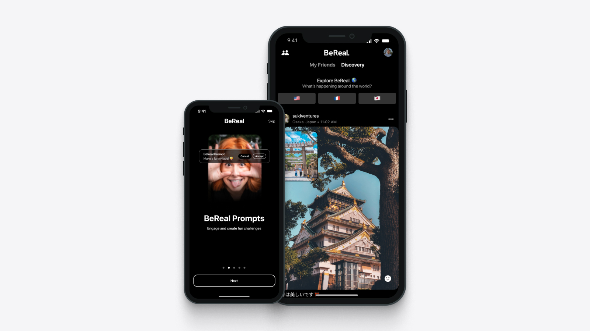
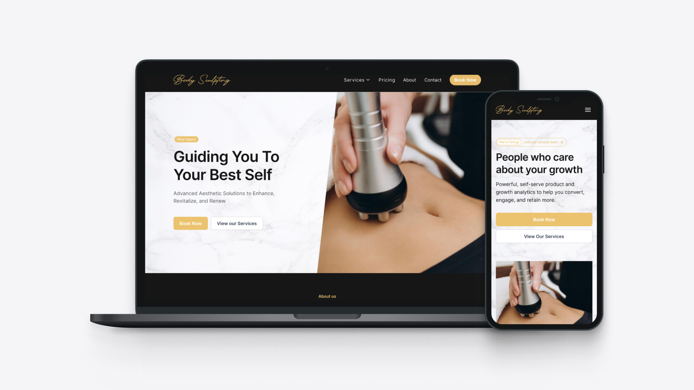

01
BeReal Redesign
Redesigning BeReal's core experience to reduce social pressure and encourage more genuine, in-the-moment sharing, without losing what makes it unique.
View case study →Hello world! / hola! /
Currently open to full-time product design roles. Based in the Central Valley and Bay Area — I design with intention and build what I design.

Redesigning BeReal's core experience to reduce social pressure and encourage more genuine, in-the-moment sharing, without losing what makes it unique.
View case study →An AI-powered misinformation detection tool designed and built in 24 hours at a hackathon. Helps users verify claims in real time before sharing them online. Placed 2nd overall.
View case study →
Freelance homepage redesign for a local aesthetics clinic. Building trust and driving bookings through a cleaner visual hierarchy and a more confident brand presence.
View case study →A self-hosted media automation system built on a Raspberry Pi 5. Containerised services handle discovery, downloading, and streaming, routed through a VPN with a fail-closed design and public HTTPS access via a Caddy reverse proxy.
docker compose up -d
Starting services: sonarr, radarr, jellyfin, gluetun...
✓ All 6 containers healthy
This portfolio is hand-written HTML, CSS, and JavaScript with no frameworks or build tools. Responsive two-panel layout, dark mode via CSS custom properties, vanilla JS scroll reveals and hover previews. Hosted on Vercel.
vercel --prod
Deploying portfolio2026 to production...
✓ Deployed to portfolio2026-puce.vercel.app